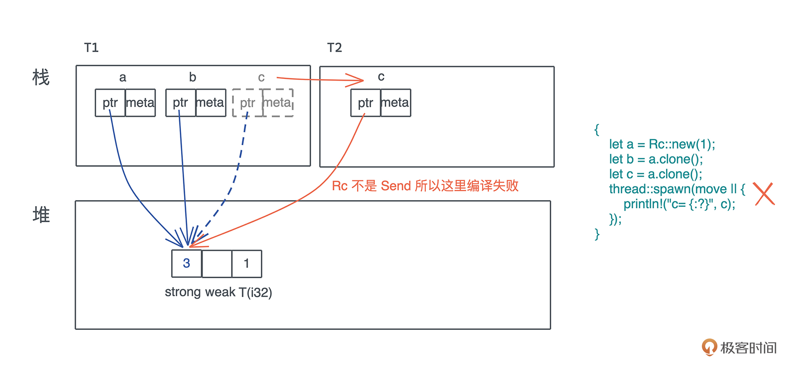
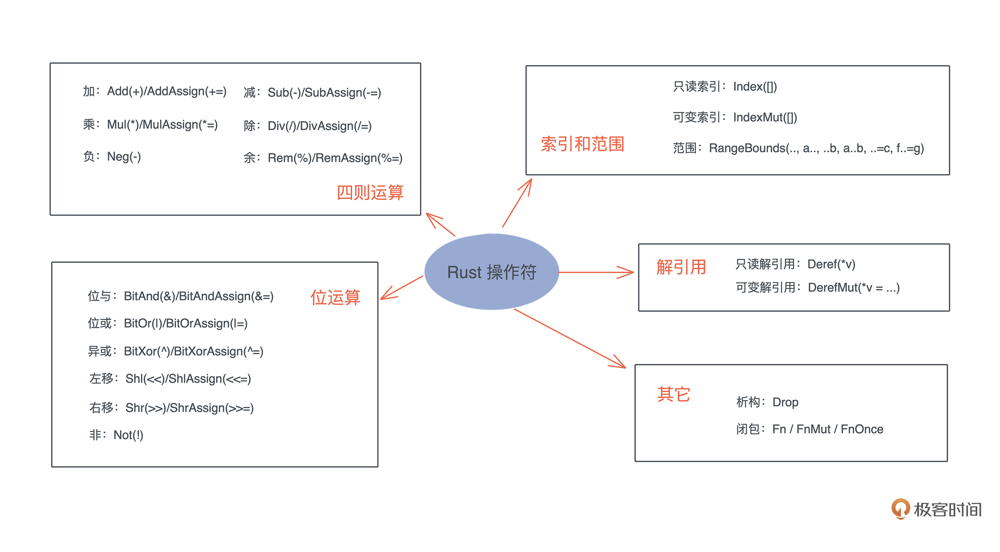
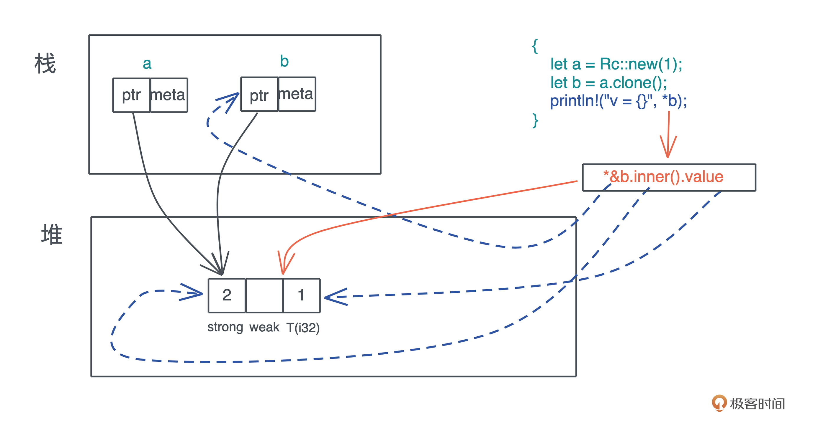
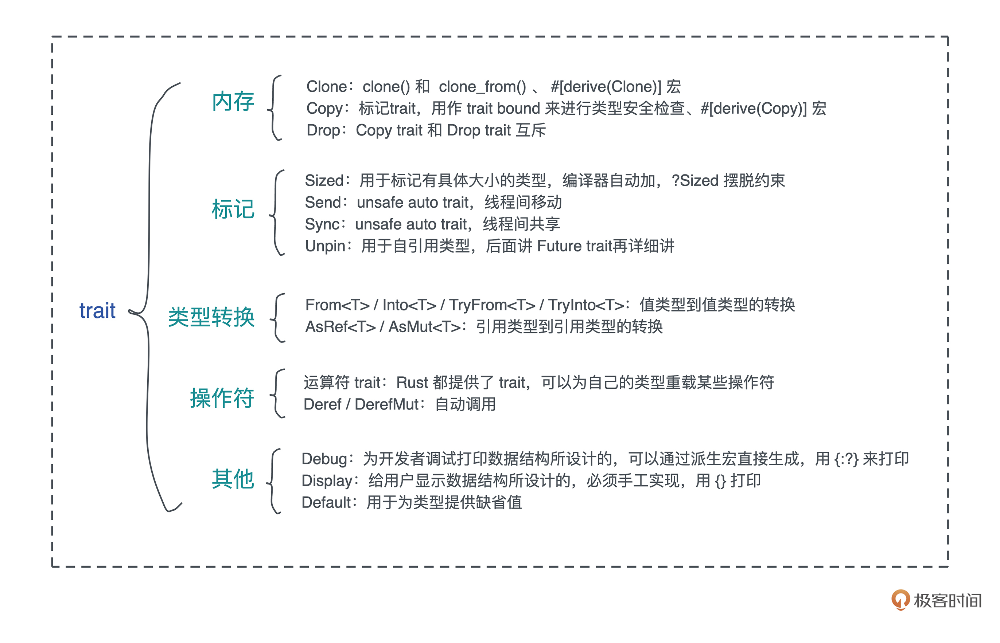

- 00 开篇词 让Rust成为你的下一门主力语言.md.html
- 01 内存：值放堆上还是放栈上，这是一个问题.md.html
- 02 串讲：编程开发中，那些你需要掌握的基本概念.md.html
- 03 初窥门径：从你的第一个Rust程序开始！.md.html
- 04 get hands dirty：来写个实用的CLI小工具.md.html
- 05 get hands dirty：做一个图片服务器有多难？.md.html
- 06 get hands dirty：SQL查询工具怎么一鱼多吃？.md.html
- 07 所有权：值的生杀大权到底在谁手上？.md.html
- 08 所有权：值的借用是如何工作的？.md.html
- 09 所有权：一个值可以有多个所有者么？.md.html
- 10 生命周期：你创建的值究竟能活多久？.md.html
- 11 内存管理：从创建到消亡，值都经历了什么？.md.html
- 12 类型系统：Rust的类型系统有什么特点？.md.html
- 13 类型系统：如何使用trait来定义接口？.md.html
- 14 类型系统：有哪些必须掌握的trait？.md.html
- 15 数据结构：这些浓眉大眼的结构竟然都是智能指针？.md.html
- 16 数据结构：Vec_T_、&[T]、Box_[T]_ ，你真的了解集合容器么？.md.html
- 17 数据结构：软件系统核心部件哈希表，内存如何布局？.md.html
- 18 错误处理：为什么Rust的错误处理与众不同？.md.html
- 19 闭包：FnOnce、FnMut和Fn，为什么有这么多类型？.md.html
- 20 4 Steps ：如何更好地阅读Rust源码？.md.html
- 21 阶段实操（1）：构建一个简单的KV server-基本流程.md.html
- 22 阶段实操（2）：构建一个简单的KV server-基本流程.md.html
- 23 类型系统：如何在实战中使用泛型编程？.md.html
- 24 类型系统：如何在实战中使用trait object？.md.html
- 25 类型系统：如何围绕trait来设计和架构系统？.md.html
- 26 阶段实操（3）：构建一个简单的KV server-高级trait技巧.md.html
- 27 生态系统：有哪些常有的Rust库可以为我所用？.md.html
- 28 网络开发（上）：如何使用Rust处理网络请求？.md.html
- 29 网络开发（下）：如何使用Rust处理网络请求？.md.html
- 30 Unsafe Rust：如何用C++的方式打开Rust？.md.html
- 31 FFI：Rust如何和你的语言架起沟通桥梁？.md.html
- 32 实操项目：使用PyO3开发Python3模块.md.html
- 33 并发处理（上）：从atomics到Channel，Rust都提供了什么工具？.md.html
- 34 并发处理（下）：从atomics到Channel，Rust都提供了什么工具？.md.html
- 35 实操项目：如何实现一个基本的MPSC channel？.md.html
- 36 阶段实操（4）：构建一个简单的KV server-网络处理.md.html
- 37 阶段实操（5）：构建一个简单的KV server-网络安全.md.html
- 38 异步处理：Future是什么？它和async_await是什么关系？.md.html
- 39 异步处理：async_await内部是怎么实现的？.md.html
- 40 异步处理：如何处理异步IO？.md.html
- 41 阶段实操（6）：构建一个简单的KV server-异步处理.md.html
- 42 阶段实操（7）：构建一个简单的KV server-如何做大的重构？.md.html
- 43 生产环境：真实世界下的一个Rust项目包含哪些要素？.md.html
- 44 数据处理：应用程序和数据如何打交道？.md.html
- 45 阶段实操（8）：构建一个简单的KV server-配置_测试_监控_CI_CD.md.html
- 46 软件架构：如何用Rust架构复杂系统？.md.html
- 加餐 Rust2021版次问世了！.md.html
- 加餐 代码即数据：为什么我们需要宏编程能力？.md.html
- 加餐 宏编程（上）：用最“笨”的方式撰写宏.md.html
- 加餐 宏编程（下）：用 syn_quote 优雅地构建宏.md.html
- 加餐 愚昧之巅：你的Rust学习常见问题汇总.md.html
- 加餐 期中测试：参考实现讲解.md.html
- 加餐 期中测试：来写一个简单的grep命令行.md.html
- 加餐 这个专栏你可以怎么学，以及Rust是否值得学？.md.html
- 大咖助场 开悟之坡（上）：Rust的现状、机遇与挑战.md.html
- 大咖助场 开悟之坡（下）：Rust的现状、机遇与挑战.md.html
- 特别策划 学习锦囊（一）：听听课代表们怎么说.md.html
- 特别策划 学习锦囊（三）：听听课代表们怎么说.md.html
- 特别策划 学习锦囊（二）：听听课代表们怎么说.md.html
- 用户故事 绝望之谷：改变从学习开始.md.html
- 用户故事 语言不仅是工具，还是思维方式.md.html
- 结束语 永续之原：Rust学习，如何持续精进？.md.html
- 捐赠
14 类型系统：有哪些必须掌握的trait？
你好，我是陈天。
开发软件系统时，我们弄清楚需求，要对需求进行架构上的分析和设计。在这个过程中，合理地定义和使用 trait，会让代码结构具有很好的扩展性，让系统变得非常灵活。
之前在 get hands dirty 系列中就粗略见识到了 trait 的巨大威力，使用了 From
经过上两讲的学习，相信你现在对trait 的理解就深入了。在实际解决问题的过程中，用好这些 trait，会让你的代码结构更加清晰，阅读和使用都更加符合 Rust 生态的习惯。比如数据结构实现了 Debug trait，那么当你想打印数据结构时，就可以用 {:?} 来打印；如果你的数据结构实现了 From
trait
Rust 语言的标准库定义了大量的标准 trait，来先来数已经学过的，看看攒了哪些：
- Clone/Copy trait，约定了数据被深拷贝和浅拷贝的行为；
- Read/Write trait，约定了对 I/O 读写的行为；
- Iterator，约定了迭代器的行为；
- Debug，约定了数据如何被以 debug 的方式显示出来的行为；
- Default，约定数据类型的缺省值如何产生的行为；
- From
/TryFrom ，约定了数据间如何转换的行为。
我们会再学习几类重要的 trait，包括和内存分配释放相关的 trait、用于区别不同类型协助编译器做类型安全检查的标记 trait、进行类型转换的 trait、操作符相关的 trait，以及 Debug/Display/Default。
在学习这些 trait的过程中，你也可以结合之前讲的内容，有意识地思考一下Rust为什么这么设计，在增进对语言理解的同时，也能写出更加优雅的 Rust 代码。
内存相关：Clone/Copy/Drop
首先来看内存相关的 Clone/Copy/Drop。这三个 trait 在介绍所有权的时候已经学习过，这里我们再深入研究一下它们的定义和使用场景。
Clone trait
首先看 Clone：
pub trait Clone {
fn clone(&self) -> Self;
fn clone_from(&mut self, source: &Self) {
*self = source.clone()
}
}
Clone trait 有两个方法， clone() 和 clone_from() ，后者有缺省实现，所以平时我们只需要实现 clone() 方法即可。你也许会疑惑，这个 clone_from() 有什么作用呢？因为看起来 a.clone_from(&b) ，和 a = b.clone() 是等价的。
其实不是，如果 a 已经存在，在 clone 过程中会分配内存，那么用 a.clone_from(&b) 可以避免内存分配，提高效率。
Clone trait 可以通过派生宏直接实现，这样能简化不少代码。如果在你的数据结构里，每一个字段都已经实现了Clone trait，你可以用 #[derive(Clone)] ，看下面的代码，定义了 Developer 结构和 Language 枚举：
#[derive(Clone, Debug)]
struct Developer {
name: String,
age: u8,
lang: Language
}
#[allow(dead_code)]
#[derive(Clone, Debug)]
enum Language {
Rust,
TypeScript,
Elixir,
Haskell
}
fn main() {
let dev = Developer {
name: "Tyr".to_string(),
age: 18,
lang: Language::Rust
};
let dev1 = dev.clone();
println!("dev: {:?}, addr of dev name: {:p}", dev, dev.name.as_str());
println!("dev1: {:?}, addr of dev1 name: {:p}", dev1, dev1.name.as_str())
}
如果没有为 Language 实现 Clone 的话，Developer 的派生宏 Clone 将会编译出错。运行这段代码可以看到，对于 name，也就是 String 类型的 Clone，其堆上的内存也被 Clone 了一份，所以 Clone 是深度拷贝，栈内存和堆内存一起拷贝。
值得注意的是，clone 方法的接口是 &self，这在绝大多数场合下都是适用的，我们在 clone 一个数据时只需要有已有数据的只读引用。但对 Rc
Copy trait
和 Clone trait 不同的是，Copy trait 没有任何额外的方法，它只是一个标记 trait（marker trait）。它的 trait 定义：
pub trait Copy: Clone {}
所以看这个定义，如果要实现 Copy trait 的话，必须实现 Clone trait，然后实现一个空的 Copy trait。你是不是有点疑惑：这样不包含任何行为的 trait 有什么用呢？
这样的 trait 虽然没有任何行为，但它可以用作 trait bound 来进行类型安全检查，所以我们管它叫标记 trait。
和 Clone 一样，如果数据结构的所有字段都实现了 Copy，也可以用 #[derive(Copy)] 宏来为数据结构实现 Copy。试着为 Developer 和 Language 加上 Copy：
#[derive(Clone, Copy, Debug)]
struct Developer {
name: String,
age: u8,
lang: Language
}
#[derive(Clone, Copy, Debug)]
enum Language {
Rust,
TypeScript,
Elixir,
Haskell
}
这个代码会出错。因为 String 类型没有实现 Copy。 因此，Developer 数据结构只能 clone，无法 copy。我们知道，如果类型实现了 Copy，那么在赋值、函数调用的时候，值会被拷贝，否则所有权会被移动。
所以上面的代码 Developer 类型在做参数传递时，会执行 Move 语义，而 Language 会执行 Copy 语义。
在讲所有权可变/不可变引用的时候提到，不可变引用实现了 Copy，而可变引用 &mut T 没有实现 Copy。为什么是这样？
因为如果可变引用实现了 Copy trait，那么生成一个可变引用然后把它赋值给另一个变量时，就会违背所有权规则：同一个作用域下只能有一个可变引用。可见，Rust 标准库在哪些结构可以 Copy、哪些不可以 Copy 上，有着仔细的考量。
Drop trait
在内存管理中已经详细探讨过 Drop trait。这里我们再看一下它的定义：
pub trait Drop {
fn drop(&mut self);
}
大部分场景无需为数据结构提供 Drop trait，系统默认会依次对数据结构的每个域做 drop。但有两种情况你可能需要手工实现 Drop。
第一种是希望在数据结束生命周期的时候做一些事情，比如记日志。
第二种是需要对资源回收的场景。编译器并不知道你额外使用了哪些资源，也就无法帮助你 drop 它们。比如说锁资源的释放，在 MutexGuard
impl<T: ?Sized> Drop for MutexGuard<'_, T> {
#[inline]
fn drop(&mut self) {
unsafe {
self.lock.poison.done(&self.poison);
self.lock.inner.raw_unlock();
}
}
}
需要注意的是，Copy trait 和 Drop trait 是互斥的，两者不能共存，当你尝试为同一种数据类型实现 Copy 时，也实现 Drop，编译器就会报错。这其实很好理解：Copy是按位做浅拷贝，那么它会默认拷贝的数据没有需要释放的资源；而Drop恰恰是为了释放额外的资源而生的。
我们还是写一段代码来辅助理解，在代码中，强行用 Box::into_raw 获得堆内存的指针，放入 RawBuffer 结构中，这样就接管了这块堆内存的释放。
虽然 RawBuffer 可以实现 Copy trait，但这样一来就无法实现 Drop trait。如果程序非要这么写，会导致内存泄漏，因为该释放的堆内存没有释放。
但是这个操作不会破坏 Rust 的正确性保证：即便你 Copy 了 N 份 RawBuffer，由于无法实现 Drop trait，RawBuffer 指向的那同一块堆内存不会释放，所以不会出现 use after free 的内存安全问题。（代码）
use std::{fmt, slice};
// 注意这里，我们实现了 Copy，这是因为 *mut u8/usize 都支持 Copy
#[derive(Clone, Copy)]
struct RawBuffer {
// 裸指针用 *const/*mut 来表述，这和引用的 & 不同
ptr: *mut u8,
len: usize,
}
impl From<Vec<u8>> for RawBuffer {
fn from(vec: Vec<u8>) -> Self {
let slice = vec.into_boxed_slice();
Self {
len: slice.len(),
// into_raw 之后，Box 就不管这块内存的释放了，RawBuffer 需要处理释放
ptr: Box::into_raw(slice) as *mut u8,
}
}
}
// 如果 RawBuffer 实现了 Drop trait，就可以在所有者退出时释放堆内存
// 然后，Drop trait 会跟 Copy trait 冲突，要么不实现 Copy，要么不实现 Drop
// 如果不实现 Drop，那么就会导致内存泄漏，但它不会对正确性有任何破坏
// 比如不会出现 use after free 这样的问题。
// 你可以试着把下面注释去掉，看看会出什么问题
// impl Drop for RawBuffer {
// #[inline]
// fn drop(&mut self) {
// let data = unsafe { Box::from_raw(slice::from_raw_parts_mut(self.ptr, self.len)) };
// drop(data)
// }
// }
impl fmt::Debug for RawBuffer {
fn fmt(&self, f: &mut fmt::Formatter<'_>) -> fmt::Result {
let data = self.as_ref();
write!(f, "{:p}: {:?}", self.ptr, data)
}
}
impl AsRef<[u8]> for RawBuffer {
fn as_ref(&self) -> &[u8] {
unsafe { slice::from_raw_parts(self.ptr, self.len) }
}
}
fn main() {
let data = vec![1, 2, 3, 4];
let buf: RawBuffer = data.into();
// 因为 buf 允许 Copy，所以这里 Copy 了一份
use_buffer(buf);
// buf 还能用
println!("buf: {:?}", buf);
}
fn use_buffer(buf: RawBuffer) {
println!("buf to die: {:?}", buf);
// 这里不用特意 drop，写出来只是为了说明 Copy 出来的 buf 被 Drop 了
drop(buf)
}
对于代码安全来说，内存泄漏危害大？还是 use after free 危害大呢？肯定是后者。Rust 的底线是内存安全，所以两害相权取其轻。
实际上，任何编程语言都无法保证不发生人为的内存泄漏，比如程序在运行时，开发者疏忽了，对哈希表只添加不删除，就会造成内存泄漏。但 Rust 会保证即使开发者疏忽了，也不会出现内存安全问题。
建议你仔细阅读这段代码中的注释，试着把注释掉的 Drop trait 恢复，然后再把代码改得可以编译通过，认真思考一下 Rust 这样做的良苦用心。
标记 trait：Sized/Send/Sync/Unpin
好，讲完内存相关的主要 trait，来看标记 trait。
刚才我们已经看到了一个标记 trait：Copy。Rust 还支持其它几种标记 trait：Sized/Send/Sync/Unpin。
Sized trait 用于标记有具体大小的类型。在使用泛型参数时，Rust 编译器会自动为泛型参数加上 Sized 约束，比如下面的 Data
struct Data<T> {
inner: T,
}
fn process_data<T>(data: Data<T>) {
todo!();
}
它等价于：
struct Data<T: Sized> {
inner: T,
}
fn process_data<T: Sized>(data: Data<T>) {
todo!();
}
大部分时候，我们都希望能自动添加这样的约束，因为这样定义出的泛型结构，在编译期，大小是固定的，可以作为参数传递给函数。如果没有这个约束，T 是大小不固定的类型， process_data 函数会无法编译。
但是这个自动添加的约束有时候不太适用，在少数情况下，需要 T 是可变类型的，怎么办？Rust 提供了 ?Sized 来摆脱这个约束。
如果开发者显式定义了T: ?Sized，那么 T 就可以是任意大小。如果你对（[第12讲]）之前说的 Cow 还有印象，可能会记得 Cow 中泛型参数 B 的约束是 ?Sized：
pub enum Cow<'a, B: ?Sized + 'a> where B: ToOwned,
{
// 借用的数据
Borrowed(&'a B),
// 拥有的数据
Owned(<B as ToOwned>::Owned),
}
这样 B 就可以是 [T] 或者 str 类型，大小都是不固定的。要注意 Borrowed(&‘a B) 大小是固定的，因为它内部是对 B 的一个引用，而引用的大小是固定的。
Send/Sync
说完了 Sized，我们再来看 Send/Sync，定义是：
pub unsafe auto trait Send {}
pub unsafe auto trait Sync {}
这两个 trait 都是 unsafe auto trait，auto 意味着编译器会在合适的场合，自动为数据结构添加它们的实现，而 unsafe 代表实现的这个 trait 可能会违背 Rust 的内存安全准则，如果开发者手工实现这两个 trait ，要自己为它们的安全性负责。
Send/Sync 是 Rust 并发安全的基础：
- 如果一个类型 T 实现了 Send trait，意味着 T 可以安全地从一个线程移动到另一个线程，也就是说所有权可以在线程间移动。
- 如果一个类型 T 实现了 Sync trait，则意味着 &T 可以安全地在多个线程中共享。一个类型 T 满足 Sync trait，当且仅当 &T 满足 Send trait。
对于 Send/Sync 在线程安全中的作用，可以这么看，如果一个类型T: Send，那么 T 在某个线程中的独占访问是线程安全的；如果一个类型 T: Sync，那么 T 在线程间的只读共享是安全的。
对于我们自己定义的数据结构，如果其内部的所有域都实现了 Send/Sync，那么这个数据结构会被自动添加 Send/Sync 。基本上原生数据结构都支持 Send/Sync，也就是说，绝大多数自定义的数据结构都是满足 Send/Sync 的。标准库中，不支持 Send/Sync 的数据结构主要有：
- 裸指针 *const T/*mut T。它们是不安全的，所以既不是 Send 也不是 Sync。
- UnsafeCell
不支持 Sync。也就是说，任何使用了 Cell 或者 RefCell 的数据结构不支持 Sync。 - 引用计数 Rc 不支持 Send 也不支持 Sync。所以 Rc 无法跨线程。
之前介绍过 Rc/RefCell（[第9讲]），我们来看看，如果尝试跨线程使用 Rc/RefCell，会发生什么。在 Rust 下，如果想创建一个新的线程，需要使用 std::thread::spawn：
pub fn spawn<F, T>(f: F) -> JoinHandle<T>
where
F: FnOnce() -> T,
F: Send + 'static,
T: Send + 'static,
它的参数是一个闭包（后面会讲），这个闭包需要 Send + ‘static：
- ‘static 意思是闭包捕获的自由变量必须是一个拥有所有权的类型，或者是一个拥有静态生命周期的引用；
- Send 意思是，这些被捕获自由变量的所有权可以从一个线程移动到另一个线程。
从这个接口上，可以得出结论：如果在线程间传递 Rc，是无法编译通过的，因为 Rc 的实现不支持 Send 和 Sync。写段代码验证一下（代码）：
// Rc 既不是 Send，也不是 Sync
fn rc_is_not_send_and_sync() {
let a = Rc::new(1);
let b = a.clone();
let c = a.clone();
thread::spawn(move || {
println!("c= {:?}", c);
});
}
果然，这段代码不通过。- 
那么，RefCell
fn refcell_is_send() {
let a = RefCell::new(1);
thread::spawn(move || {
println!("a= {:?}", a);
});
}
验证一下发现，这是 OK 的。
既然 Rc 不能 Send，我们无法跨线程使用 Rc
// RefCell 现在有多个 Arc 持有它，虽然 Arc 是 Send/Sync，但 RefCell 不是 Sync
fn refcell_is_not_sync() {
let a = Arc::new(RefCell::new(1));
let b = a.clone();
let c = a.clone();
thread::spawn(move || {
println!("c= {:?}", c);
});
}
不可以。
因为 Arc 内部的数据是共享的，需要支持 Sync 的数据结构，但是RefCell 不是 Sync，编译失败。所以在多线程情况下，我们只能使用支持 Send/Sync 的 Arc ，和 Mutex 一起，构造一个可以在多线程间共享且可以修改的类型（代码）：
use std::{
sync::{Arc, Mutex},
thread,
};
// Arc<Mutex<T>> 可以多线程共享且修改数据
fn arc_mutext_is_send_sync() {
let a = Arc::new(Mutex::new(1));
let b = a.clone();
let c = a.clone();
let handle = thread::spawn(move || {
let mut g = c.lock().unwrap();
*g += 1;
});
{
let mut g = b.lock().unwrap();
*g += 1;
}
handle.join().unwrap();
println!("a= {:?}", a);
}
fn main() {
arc_mutext_is_send_sync();
}
这几段代码建议你都好好阅读和运行一下，对于编译出错的情况，仔细看看编译器给出的错误，会帮助你理解好 Send/Sync trait 以及它们如何保证并发安全。
最后一个标记 trait Unpin，是用于自引用类型的，在后面讲到 Future trait 时，再详细讲这个 trait。
类型转换相关：From/Into/AsRef/AsMut
好，学完了标记 trait，来看看和类型转换相关的 trait。在软件开发的过程中，我们经常需要在某个上下文中，把一种数据结构转换成另一种数据结构。
不过转换有很多方式，看下面的代码，你觉得哪种方式更好呢？
// 第一种方法，为每一种转换提供一个方法
// 把字符串 s 转换成 Path
let v = s.to_path();
// 把字符串 s 转换成 u64
let v = s.to_u64();
// 第二种方法，为 s 和要转换的类型之间实现一个 Into<T> trait
// v 的类型根据上下文得出
let v = s.into();
// 或者也可以显式地标注 v 的类型
let v: u64 = s.into();
第一种方式，在类型 T 的实现里，要为每一种可能的转换提供一个方法；第二种，我们为类型 T 和类型 U 之间的转换实现一个数据转换 trait，这样可以用同一个方法来实现不同的转换。
显然，第二种方法要更好，因为它符合软件开发的开闭原则（Open-Close Principle），“软件中的对象（类、模块、函数等等）对扩展是开放的，但是对修改是封闭的”。
在第一种方式下，未来每次要添加对新类型的转换，都要重新修改类型 T 的实现，而第二种方式，我们只需要添加一个对于数据转换 trait 的新实现即可。
基于这个思路，对值类型的转换和对引用类型的转换，Rust 提供了两套不同的 trait：
- 值类型到值类型的转换：From
/Into /TryFrom /TryInto - 引用类型到引用类型的转换：AsRef
/AsMut
From/Into
先看 From
pub trait From<T> {
fn from(T) -> Self;
}
pub trait Into<T> {
fn into(self) -> T;
}
在实现 From
// 实现 From 会自动实现 Into
impl<T, U> Into<U> for T where U: From<T> {
fn into(self) -> U {
U::from(self)
}
}
所以大部分情况下，只用实现 From
let s = String::from("Hello world!");
let s: String = "Hello world!".into();
这两种方式是等价的，怎么选呢？From
此外，From
// From（以及 Into）是自反的
impl<T> From<T> for T {
fn from(t: T) -> T {
t
}
}
有了 From
use std::net::{IpAddr, Ipv4Addr, Ipv6Addr};
fn print(v: impl Into<IpAddr>) {
println!("{:?}", v.into());
}
fn main() {
let v4: Ipv4Addr = "2.2.2.2".parse().unwrap();
let v6: Ipv6Addr = "::1".parse().unwrap();
// IPAddr 实现了 From<[u8; 4]，转换 IPv4 地址
print([1, 1, 1, 1]);
// IPAddr 实现了 From<[u16; 8]，转换 IPv6 地址
print([0xfe80, 0, 0, 0, 0xaede, 0x48ff, 0xfe00, 0x1122]);
// IPAddr 实现了 From<Ipv4Addr>
print(v4);
// IPAddr 实现了 From<Ipv6Addr>
print(v6);
}
所以，合理地使用 From
注意，如果你的数据类型在转换过程中有可能出现错误，可以使用 TryFrom
AsRef/AsMut
搞明白了 From
pub trait AsRef<T> where T: ?Sized {
fn as_ref(&self) -> &T;
}
pub trait AsMut<T> where T: ?Sized {
fn as_mut(&mut self) -> &mut T;
}
在 trait 的定义上，都允许 T 使用大小可变的类型，如 str、[u8] 等。AsMut
看标准库中打开文件的接口 std::fs::File::open：
pub fn open<P: AsRef<Path>>(path: P) -> Result<File>
它的参数 path 是符合 AsRef
来写一段代码体验一下 AsRef
#[allow(dead_code)]
enum Language {
Rust,
TypeScript,
Elixir,
Haskell,
}
impl AsRef<str> for Language {
fn as_ref(&self) -> &str {
match self {
Language::Rust => "Rust",
Language::TypeScript => "TypeScript",
Language::Elixir => "Elixir",
Language::Haskell => "Haskell",
}
}
}
fn print_ref(v: impl AsRef<str>) {
println!("{}", v.as_ref());
}
fn main() {
let lang = Language::Rust;
// &str 实现了 AsRef<str>
print_ref("Hello world!");
// String 实现了 AsRef<str>
print_ref("Hello world!".to_string());
// 我们自己定义的 enum 也实现了 AsRef<str>
print_ref(lang);
}
现在对在 Rust 下，如何使用 From/Into/AsRef/AsMut 进行类型间转换，有了深入了解，未来我们还会在实战中使用到这些 trait。
刚才的小例子中要额外说明一下的是，如果你的代码出现 v.as_ref().clone() 这样的语句，也就是说你要对 v 进行引用转换，然后又得到了拥有所有权的值，那么你应该实现 From
操作符相关：Deref/DerefMut
操作符相关的 trait ，上一讲我们已经看到了 Add

今天重点要介绍的操作符是 Deref 和 DerefMut。来看它们的定义：
pub trait Deref {
// 解引用出来的结果类型
type Target: ?Sized;
fn deref(&self) -> &Self::Target;
}
pub trait DerefMut: Deref {
fn deref_mut(&mut self) -> &mut Self::Target;
}
可以看到，DerefMut “继承”了 Deref，只是它额外提供了一个 deref_mut 方法，用来获取可变的解引用。所以这里重点学习 Deref。
对于普通的引用，解引用很直观，因为它只有一个指向值的地址，从这个地址可以获取到所需要的值，比如下面的例子：
let mut x = 42;
let y = &mut x;
// 解引用，内部调用 DerefMut（其实现就是 *self）
*y += 1;
但对智能指针来说，拿什么域来解引用就不那么直观了，我们来看之前学过的 Rc 是怎么实现 Deref 的：
impl<T: ?Sized> Deref for Rc<T> {
type Target = T;
fn deref(&self) -> &T {
&self.inner().value
}
}
可以看到，它最终指向了堆上的 RcBox 内部的 value 的地址，然后如果对其解引用的话，得到了 value 对应的值。以下图为例，最终打印出 v = 1。- 
从图中还可以看到，Deref 和 DerefMut 是自动调用的，*b 会被展开为 *(b.deref())。
在 Rust 里，绝大多数智能指针都实现了 Deref，我们也可以为自己的数据结构实现 Deref。看一个例子（代码）：
use std::ops::{Deref, DerefMut};
#[derive(Debug)]
struct Buffer<T>(Vec<T>);
impl<T> Buffer<T> {
pub fn new(v: impl Into<Vec<T>>) -> Self {
Self(v.into())
}
}
impl<T> Deref for Buffer<T> {
type Target = [T];
fn deref(&self) -> &Self::Target {
&self.0
}
}
impl<T> DerefMut for Buffer<T> {
fn deref_mut(&mut self) -> &mut Self::Target {
&mut self.0
}
}
fn main() {
let mut buf = Buffer::new([1, 3, 2, 4]);
// 因为实现了 Deref 和 DerefMut，这里 buf 可以直接访问 Vec<T> 的方法
// 下面这句相当于：(&mut buf).deref_mut().sort()，也就是 (&mut buf.0).sort()
buf.sort();
println!("buf: {:?}", buf);
}
但是在这个例子里，数据结构 Buffer
可以实现 Deref 和 DerefMut，这样在解引用的时候，直接访问到 buf.0，省去了代码的啰嗦和数据结构内部字段的隐藏。
在这段代码里，还有一个值得注意的地方：写 buf.sort() 的时候，并没有做解引用的操作，为什么会相当于访问了 buf.0.sort() 呢？这是因为 sort() 方法第一个参数是 &mut self，此时 Rust 编译器会强制做 Deref/DerefMut 的解引用，所以这相当于 (*(&mut buf)).sort()。
其它：Debug/Display/Default
现在我们对运算符相关的 trait 有了足够的了解，最后来看看其它一些常用的 trait：Debug/Display/Default。
先看 Debug/Display，它们的定义如下：
pub trait Debug {
fn fmt(&self, f: &mut Formatter<'_>) -> Result<(), Error>;
}
pub trait Display {
fn fmt(&self, f: &mut Formatter<'_>) -> Result<(), Error>;
}
可以看到，Debug 和 Display 两个 trait 的签名一样，都接受一个 &self 和一个 &mut Formatter。那为什么要有两个一样的 trait 呢？
这是因为 Debug 是为开发者调试打印数据结构所设计的，而 Display 是给用户显示数据结构所设计的。这也是为什么 Debug trait 的实现可以通过派生宏直接生成，而 Display 必须手工实现。在使用的时候，Debug 用 {:?} 来打印，Display 用 {} 打印。
最后看 Default trait。它的定义如下：
pub trait Default {
fn default() -> Self;
}
Default trait 用于为类型提供缺省值。它也可以通过 derive 宏 #[derive(Default)] 来生成实现，前提是类型中的每个字段都实现了 Default trait。在初始化一个数据结构时，我们可以部分初始化，然后剩余的部分使用 Default::default()。
Debug/Display/Default 如何使用，统一看个例子（代码）：
use std::fmt;
// struct 可以 derive Default，但我们需要所有字段都实现了 Default
#[derive(Clone, Debug, Default)]
struct Developer {
name: String,
age: u8,
lang: Language,
}
// enum 不能 derive Default
#[allow(dead_code)]
#[derive(Clone, Debug)]
enum Language {
Rust,
TypeScript,
Elixir,
Haskell,
}
// 手工实现 Default
impl Default for Language {
fn default() -> Self {
Language::Rust
}
}
impl Developer {
pub fn new(name: &str) -> Self {
// 用 ..Default::default() 为剩余字段使用缺省值
Self {
name: name.to_owned(),
..Default::default()
}
}
}
impl fmt::Display for Developer {
fn fmt(&self, f: &mut fmt::Formatter<'_>) -> fmt::Result {
write!(
f,
"{}({} years old): {:?} developer",
self.name, self.age, self.lang
)
}
}
fn main() {
// 使用 T::default()
let dev1 = Developer::default();
// 使用 Default::default()，但此时类型无法通过上下文推断，需要提供类型
let dev2: Developer = Default::default();
// 使用 T::new
let dev3 = Developer::new("Tyr");
println!("dev1: {}\\ndev2: {}\\ndev3: {:?}", dev1, dev2, dev3);
}
它们实现起来非常简单，你可以看文中的代码。
小结
今天介绍了内存管理、类型转换、操作符、数据显示等相关的基本 trait，还介绍了标记 trait，它是一种特殊的 trait，主要是用于协助编译器检查类型安全。- 
在我们使用 Rust 开发时，trait 占据了非常核心的地位。一个设计良好的 trait 可以大大提升整个系统的可用性和扩展性。
很多优秀的第三方库，都围绕着 trait 展开它们的能力，比如上一讲提到的 tower-service 中的 Service trait，再比如你日后可能会经常使用到的 parser combinator 库 nom 的 Parser trait。
因为 trait 实现了延迟绑定。不知道你是否还记得，之前串讲编程基础概念的时候，就谈到了延迟绑定。在软件开发中，延迟绑定会带来极大的灵活性。
从数据的角度看，数据结构是具体数据的延迟绑定，泛型结构是具体数据结构的延迟绑定；从代码的角度看，函数是一组实现某个功能的表达式的延迟绑定，泛型函数是函数的延迟绑定。那么 trait 是什么的延迟绑定呢？
trait 是行为的延迟绑定。我们可以在不知道具体要处理什么数据结构的前提下，先通过 trait 把系统的很多行为约定好。这也是为什么开头解释标准trait时，频繁用到了“约定……行为”。
相信通过今天的学习，你能对 trait 有更深刻的认识，在撰写自己的数据类型时，就能根据需要实现这些 trait。
思考题
Vec
可以实现 Copy trait 么？为什么？- 在使用 Arc
use std::sync::{Arc, Mutex}; let shared = Arc::new(Mutex::new(1)); let mut g = shared.lock().unwrap(); *g += 1;
3.有余力的同学可以尝试一下，为下面的 List
use std::{
collections::LinkedList,
ops::{Deref, DerefMut, Index},
};
struct List<T>(LinkedList<T>);
impl<T> Deref for List<T> {
type Target = LinkedList<T>;
fn deref(&self) -> &Self::Target {
&self.0
}
}
impl<T> DerefMut for List<T> {
fn deref_mut(&mut self) -> &mut Self::Target {
&mut self.0
}
}
impl<T> Default for List<T> {
fn default() -> Self {
Self(Default::default())
}
}
impl<T> Index<isize> for List<T> {
type Output = T;
fn index(&self, index: isize) -> &Self::Output {
todo!();
}
}
#[test]
fn it_works() {
let mut list: List<u32> = List::default();
for i in 0..16 {
list.push_back(i);
}
assert_eq!(list[0], 0);
assert_eq!(list[5], 5);
assert_eq!(list[15], 15);
assert_eq!(list[16], 0);
assert_eq!(list[-1], 15);
assert_eq!(list[128], 0);
assert_eq!(list[-128], 0);
}
今天你已经完成了Rust学习的第14次打卡，坚持学习，如果你觉得有收获，也欢迎分享给身边的朋友，邀TA一起讨论。我们下节课见～
© 2019 - 2023 Liangliang Lee. Powered by gin and hexo-theme-book.